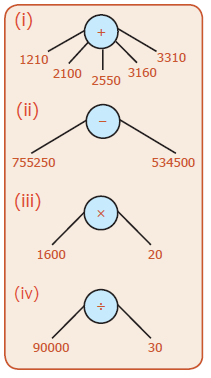
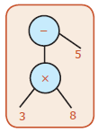
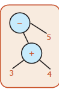

![Picture 1 :This is a tree diagram that has circle with addition symbol as root has 8 in the left hand side and circle with multiplication symbol in the right hand side as branches .circle with multiplication symbol has 6 in the left hand side and 2 in the right hand side as branches. Picture 2 :This is a tree diagram that has a circle with a subtraction symbol as root has 9 in the left hand side and circle with multiplication symbol in the right hand side as branches. circle with multiplication symbol has two in the left hand side 3 in the right hand side as branches . picture 3 : This is a tree diagram that has circle with subtraction symbol as root has circle with multiplication symbol in the left hand side and circle with division symbol in right hand side as branches .circle with multiplication symbol has 3 in the left hand side 5 in the right hand side as branches .circle with division symbol has 4 in the left hand side 2 in the right hand side as branches. picture 4 : This is a tree diagram that has circle with multiplication symbol as root has circle with addition symbol in the left hand side and the circle with division symbol in the right hand side as branches .circle with addition symbol has two in the left hand side and circle with multiplication symbol in the right hand side as branches. circle with multiplication symbol has two in the left hand side and 4 in the right hand side as branches. circle with the division symbol has 8 in the left hand side and 2 in the right hand side as branches. picture 5 : This is a tree diagram that has circle with division symbol as root has circle with multiplication symbol in the left hand side and circle with multiplication symbol in the right hand side as branches .circle with multiplication symbol as root has 7 in the left hand side and circle with addition symbol is right hand side as branches. circle with addition symbol has 6 in the left hand side and 4 in the right hand side as branches. circle with multiplication symbol has circle with subtraction symbol in the left hand side and 2 in the right side as branches. circle with the subtraction symbol has 10 in the left hand side and 5 in the right hand side as branches. picture 6 : This is a tree diagram has circle with addition symbol as root has circle with division symbol in the left hand side and circle with multiplication symbol in the right hand side as branches .circle with division symbol as root has 2 in the left hand side and s right hand side as branches. circle with multiplication symbol has 4 in the left hand side and 3 in the right hand side as branches. circle with multiplication symbol has circle with subtraction symbol in the left hand side and 8 in the right side as branches. circle with the subtraction symbol has 5 in the left hand side and 3 in the right hand side as branches.](images/image-189.png)
Question Number 2)
1. 9 into 8
2. open bracket 7 plus 6 close bracket minus 5
3. open bracket 8 plus 2 close bracket minus open bracket 6 plus 1 close bracket
4. open bracket 5 into 6 close bracket minus open bracket 10 divided by2 close bracket
Question Number 3)
![3) Picture 1 : This is a tree diagram that has circle with multiplication symbol. It has 10 in the left hand side and v in the right hand side as branches. Picture 2 : This is a tree diagram that has circle with subtraction symbol as root has circle with multiplication symbol in the left hand side and b in the right side as branches. circle with multiplication symbol has 3 in the left hand side and a in the right hand side as branches. Picture 3 : This is a tree diagram that has circle with addition symbol as root has circle with multiplication symbol in the left hand side and y in the right hand side as branches .circle with multiplication symbol has 5 in the left hand side and x in the right hand side as branches . Picture 4 : This is a tree diagram that has circle with multiplication symbol as root has circle with multiplication symbol in the left hand side and p in the right hand side as branches .circle with multiplication symbol has 20 in the left hand side and t in the right hand side as branches . Picture 5: This is a tree diagram that has circle with multiplication symbol as root has 2 in the left hand side and circle with addition symbol in the right hand side as branches. circle with addition symbol has a in the left hand side and b in the right hand side as branches . Picture 6: This is a tree diagram that has circle with subtraction symbol as root has circle with multiplication symbol in the left hand side and circle with multiplication symbol in right hand side as branches. circle with multiplication symbol has x in the left hand side and y in the right hand side as branches .circle with multiplication symbol has y in the left hand side and z in the right hand side as branches. Picture 7: This is a tree diagram that has circle with addition symbol as root has circle with multiplication symbol in the left hand side and circle with multiplication symbol in right hand side as branches. circle with multiplication symbol has 4 in the left hand side and x in the right hand side as branches .circle with multiplication symbol has 5 in the left hand side and y in the right hand side as branches. Picture 8: This is a tree diagram that has circle with division symbol as root has circle with subtraction symbol in the left hand side and circle with addition symbol in right hand side as branches. circle with subtraction symbol has circle with multiplication symbol in the left hand side and n in the right hand side as branches .circle with multiplication symbol has l in the left hand side and m in the right hand side as branches. circle with addition symbol has circle with multiplication symbol in the left hand side and r in the right hand side as branches .circle with multiplication symbol has p in the left hand side and q in the right hand side as branches.](images/image-190.png)
Question Number 4) Algebraic expression
(1) plus q
(2) l minus m
(3) ab minus c
(4) open bracket a plus b close bracket minus open bracket c plus d close bracket
(5) open bracket 8 divided by a close bracket plus [open bracket b divided by 4 close bracket pluse 3]
Question Number 1)
![Exercise 5.2 :1) picture 1: circle with multiplication symbol as root has 15 in the left hand side and circle with division symbol 9 in the left hand side and 3 in the right hand side as branches . picture 2: circle with division symbol as root has 65 in the left hand side and circle with addition symbol in the right hand side as branches. circle with addition symbol has 9 in the left hand side and 3 in the right hand side as branches. Picture 3: This is a tree diagram has circle with subtraction symbol as root has circle with addition symbol in the left hand side and circle with addition symbol in right hand side as branches. circle with addition symbol has 8 in the left hand side and 5 in the right hand side as branches. circle with addition symbol has 9 in the left hand side and 2 in the right hand side as branches.](images/image-191.png)
Question Number 2)
![2) picture 1 :circle with addition symbol as root has 8 in the left hand side and circle with division symbol in the right hand side as branches. circle with division symbol has 6 in the left hand side and 2 in the right hand side as branches .. picture 2 :circle with subtraction symbol as root has 39 in the left hand side and circle with multiplication symbol in the right hand side as branches. circle with multiplication symbol has 6 in the left hand side and 5 in the right hand side as branches .](images/image-192.png)
Question Number 3) Not equal
Question Number 4)

Question Number 6) open bracket 3 into 8 close bracket minus 5 equal to 19

Question Number 7)

Acute angled triangle |
kurun gona mukkonam |
Measurement |
Alavaigal |
Algebraic expression |
iyar kanitha kovai |
Metric units |
metric alavaigal |
Amicable numbers |
inakka maana yengal |
Midnight |
Nalliravu |
Angles |
Konangal |
Millennium |
aayiram aandugal |
Antemeridian |
mur pagal |
Minute hand |
nimida mul |
Arrival time |
vanthu serum neram |
Multiple |
Madangu |
Astronomical units |
vaana viyal alagu |
Node |
Kanu |
Atomic clock |
anu kadikaaram |
Numerical expression |
en kanitha kovai |
Bill |
Pattiyal |
Obtuse angled triangle |
viri kona mukkonam |
Bottom |
keel paagam |
Odd number |
otrai en |
Branches |
Kilaigal |
Ordinary time |
saathaarana neram |
Candle clock |
meluguvarthi kadikaaram |
Parallel lines |
inai kodugal |
Capacity |
kol lalavu |
Pendulum clock |
oosal kadigaaram |
Century |
noot raandu |
Perfect Number |
sevviya en / niraivu en |
Composite number |
pagu en |
Perpendicular lines |
senguthu kodugal |
Co-prime numbers |
saar pagaa engal |
Postmeridian |
pir pagal |
Cost price |
adakka vilai |
Prime number |
pagaa en |
Cubit |
Mulam |
Profit |
Laabam |
Dealer |
Mugavar |
Quartz clock |
quartz kadigaaram |
Departure time |
purap padum neram |
Railway time |
railway neram |
Digital clock |
ilakka murai kadi kaaram |
Revolves |
sutri varuvathu |
Discount |
Thallupadi |
Right angled triangle |
sengona mukkonam |
Duration |
nera idai veli |
Rotate |
thannaith thaane sutruvathu |
Edge |
Vilimbu |
Sand clock |
manar kadigaram |
Equilateral triangle |
sama pakka mukkonam |
Standard Units |
thitta alagugal |
Even number |
irattai en |
Scalene triangle |
asama pakka mukkonam |
Factor |
Kaarani |
Seconds hand |
nodi mul |
Foot |
Adi |
Selling price |
vitra vilai |
Higher units |
me lina alagugal |
Set square |
mukkona maani moolai mattam |
Highest Common Factor |
meep peru podhu kaarani |
Shopkeeper |
kadaik kaarar |
Horology |
kaalang kaattikalai pattriya padippu) |
Side |
Pakkam |
Hour hand |
mani mul |
Span |
Saan |
Isosceles triangle |
iru sama pakka mukkonam |
Standardized measure |
thitta alavaigal |
Leap year |
leep aandu/ net taandu |
Tree diagram |
mara vuru padam / varaipadam |
Least Common Multiple |
meech chiru podhu madangu |
Triangle |
Mukkonam |
Light year |
oli yaandu |
Triangle Inequality |
mukkona sama ninmai |
Line segment |
kottuth thundu |
Triplet |
moondran thoguthi |
Loss |
Nattam |
Twin primes |
irattai pagaa engal |
Lower units |
kee lina alagugal |
Vacuum |
Vetridam |
Manufacturer |
urpath thi yaalar |
Vertex |
uchi/ munai |
Marked price |
kuritha vilai |
Volume |
gana alavu |
Maximum retail price |
athiga patcha virpanai vilai |
Water Clock |
neer kadigaaram |
CLASS- 6
MATHEMATICS – TERM – II